Debugging iOS Applications with IDA Pro
Copyright 2020 Hex-Rays SA
Overview
This tutorial discusses optimal strategies for debugging native iOS applications with IDA Pro.
IDA Pro supports remote debugging on any iOS version since iOS 9 (including iPadOS). Debugging is generally device agnostic so it shouldn’t matter which hardware you’re using as long as it’s running iOS. The debugger itself can be used on any desktop platform that IDA supports (Mac/Windows/Linux), although using the debugger on Mac makes more features available.
Note that IDA supports debugging on both jailbroken and non-jailbroken devices. Each environment provides its own unique challenges and advantages, and we will discuss both in detail in this writeup.
Getting Started
The quickest way to get started with iOS debugging is to use Xcode to install a sample app on your device, then switch to IDA to debug it.
In this example we’ll be using an iPhone SE 2 with iOS 13.4 (non-jailbroken) while using IDA 7.5 SP1 on OSX 10.15 Catalina. Start by launching Xcode and use menu File>New>Project… to create a new project from one of the iOS templates, any of them will work:
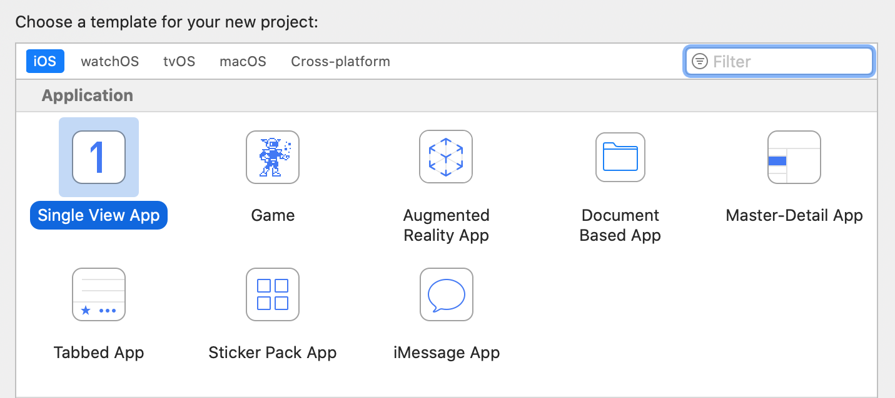
After selecting a template, set the following project options:
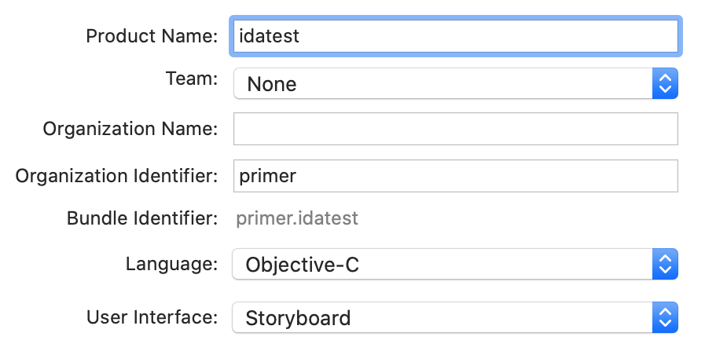
Note the bundle identifier primer.idatest, it will be important later. For the Team option choose the team associated with your iOS Developer account, and click OK. Before building be sure to set the target device in the top left of the Xcode window:
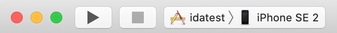
Now launch the build in Xcode. If it succeeds then Xcode will install the app on your device automatically.
Preparing a Debugging Environment
Now that we have a test app installed on our device, let’s prepare to debug it. First we must ensure that the iOS debugserver is installed on the device. Since our device is not jailbroken, this is not such a trivial task. By default iOS restricts all remote access to the device, and such operations are managed by special MacOS Frameworks.
Fortunately Hex-Rays provides a solution. Download the ios_deploy utility from our download center. This is a command-line support utility that can perform critical tasks on iOS devices without requiring a jailbreak. Try running it with the listen phase. If ios_deploy can detect your device it will print a message:
$ ios_deploy listen
Device connected:
- name: iPhone SE 2
- model: iPhone SE 2
- ios ver: 13.4
- build: 17E8255
- arch: arm64e
- id: XXXXXXXX-XXXXXXXXXXXXXXXX
Use the mount phase to install DeveloperDiskImage.dmg, which contains the debugserver:
$ export DEVELOPER=/Applications/Xcode.app/Contents/Developer
$ export DEVTOOLS=$DEVELOPER/Platforms/iPhoneOS.platform/DeviceSupport
$ ios_deploy mount -d $DEVTOOLS/13.4/DeveloperDiskImage.dmg
The device itself is now ready for debugging. Now let’s switch to IDA and start configuring the debugger. Load the idatest binary in IDA, Xcode likely put it somewhere in its DerivedData directory:
$ alias ida64="/Applications/IDA\ Pro\ 7.5\ sp1/ida64.app/Contents/MacOS/ida64"
$ export XCDATA=~/Library/Developer/Xcode/DerivedData
$ ida64 $XCDATA/idatest/Build/Products/Debug-iphoneos/idatest.app/idatest
Then go to menu Debugger>Select debugger… and select Remote iOS Debugger:
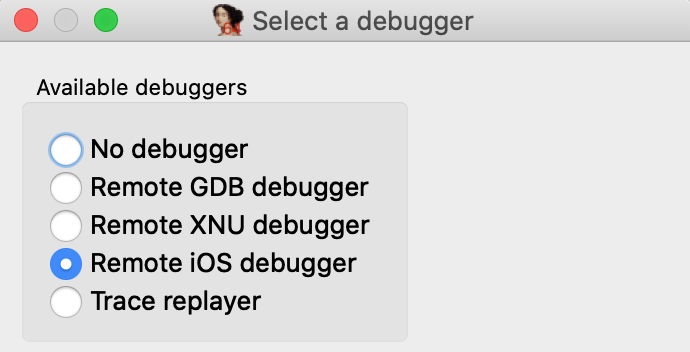
When debugging a binary remotely, IDA must know the full path to the executable on the target device. This is another task that iOS makes surprisingly difficult. Details of the filesystem are not advertised, so we must use ios_deploy to retrieve the executable path. Use the path phase with the app’s bundle ID:
$ ios_deploy path -b primer.idatest
/private/var/containers/Bundle/Application/<UUID>/idatest.app/idatest
Use this path for the fields in Debugger>Process options…
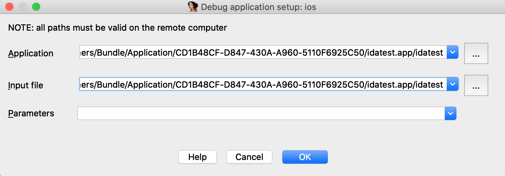
NOTE: the path contains a hex string representing the application’s 16-byte UUID. This id is regenerated every time you reinstall the app, so you must update the path in IDA whenever the app is updated on the device.
Now go to Debugger>Debugger options>Set specific options… and ensure the following fields are set:
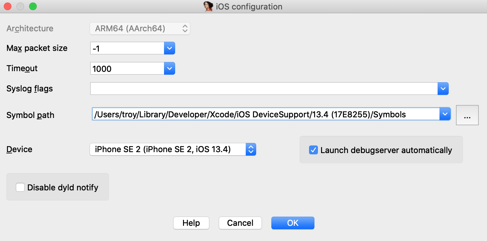
Make special note of the Symbol path option. This directory contains symbol files extracted from your device. Both IDA and Xcode use these files to load symbol tables for system libraries during debugging (instead of reading the tables in process memory), which will dramatically speed up debugging.
Xcode likely already created this directory when it first connected to your device, but if not you can always use ios_deploy to create it yourself:
$ ios_deploy symbols
Downloading /usr/lib/dyld
Downloading 0.69 MB of 0.69 MB
Downloading /System/Library/Caches/com.apple.dyld/dyld_shared_cache_arm64e
Downloading 1648.38 MB of 1648.38 MB
Extracting symbol file: 1866/1866
/Users/troy/Library/Developer/Xcode/iOS DeviceSupport/13.4 (17E8255)/Symbols: done
Also ensure that the Launch debugserver automatically option is checked. This is required for non-jailbroken devices since we have no way to launch the server manually. This option instructs IDA to establish a connection to the debugserver itself via the MacOS Frameworks, which will happen automatically at debugging start.
Lastly, Xcode might have launched the test application after installing it. Use the proclist phase to retreive the app’s pid and terminate it with the kill phase:
$ ios_deploy proclist -n idatest
32250
$ ios_deploy kill -p 32250
Finally we are ready to launch the debugger. Go to main in IDA’s disassembly view, use F2 to set a breakpoint, then F9 to launch the process, and wait for the process to hit our breakpoint:
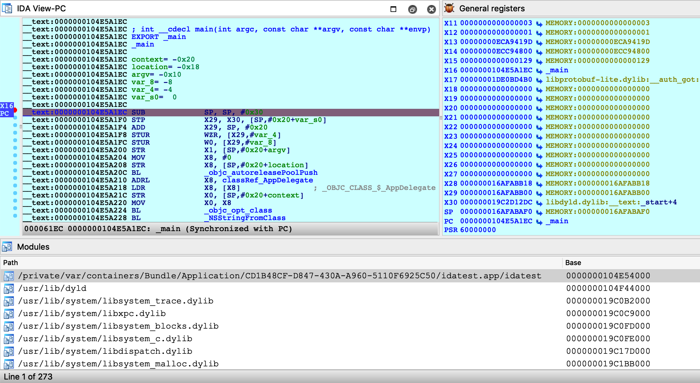
You are free to single step, inspect registers, and read/write memory just like any other IDA debugger.
Source Level Debugging
You can also use IDA to debug the source code of your iOS application. Let’s rebuild the idatest application with the DWARF with dSYM File build setting:
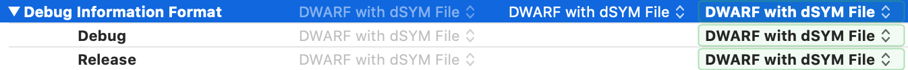
Since the app is reinstalled, the executable path will change. We’ll need to update the remote path in IDA:
$ ios_deploy path -b primer.idatest
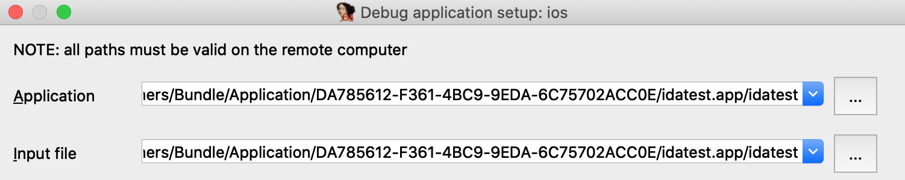
Be sure to enable Debugger>Use source-level debugging, then launch the process. At runtime IDA will be able to load the DWARF source information:
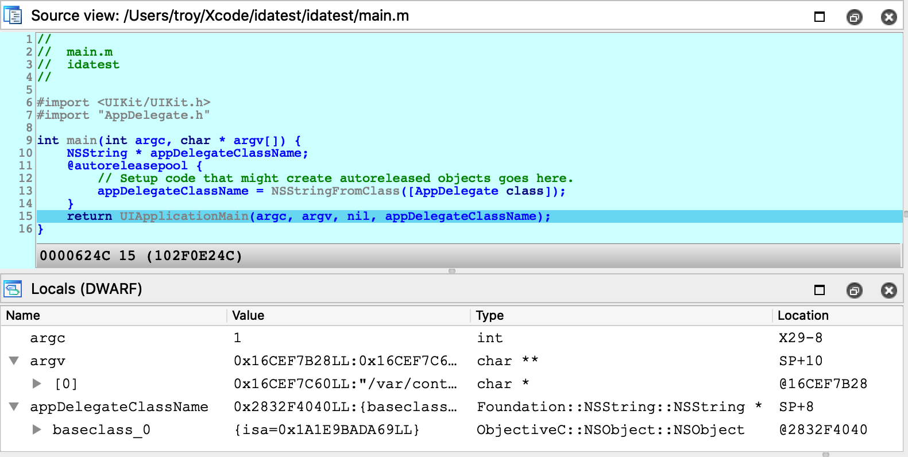
Note that the debugserver does not provide DWARF information to IDA - instead IDA looks for dSYM bundles in the vicinity of the idb on your local filesystem. Thus if you want IDA to load DWARF info for a given module, both the module binary and its matching dSYM must be in the same directory as the idb, or in the idb’s parent directory.
For example, in the case of the idatest build:
$ tree
.
├── idatest.app
│ ├── idatest
│ └── idatest.i64
└── idatest.app.dSYM
└── Contents
└── Resources
└── DWARF
└── idatest
IDA was able to find the idatest binary next to idatest.i64, as well as the dSYM bundle next to the parent app directory.
If IDA can’t find DWARF info on your filesystem for whatever reason, try launching IDA with the command-line option -z440010, which will enable much more verbose logging related to source-level debugging:
Looking for Mach-O file "idatest.app/idatest.dSYM/Contents/Resources/DWARF/idatest"
File "idatest.app/idatest.dSYM/Contents/Resources/DWARF/idatest" exists? -> No.
Looking for Mach-O file "idatest.app.dSYM/Contents/Resources/DWARF/idatest"
File "idatest.app.dSYM/Contents/Resources/DWARF/idatest" exists? -> Yes.
Looking for cpu=16777228:0, uuid=7a09f307-7503-3c0d-a182-ab552c1bf182.
Candidate: cpu=16777228:0, uuid=7a09f307-7503-3c0d-a182-ab552c1bf182.
Found, with architecture #0
DWARF: Found DWARF file "idatest.app.dSYM/Contents/Resources/DWARF/idatest"
Debugging DYLD
IDA can also be used to debug binaries that are not user applications. For example, dyld.
The ability to debug dyld is a nice advantage because it allows us to observe critical changes in the latest versions of iOS (especially regarding the shared cache) before a jailbreak is even available. We document this functionality here in the hopes it will be useful to others as well.
In this example we’ll be using IDA to discover how dyld uses ARMv8.3 Pointer Authentication to perform secure symbol bindings. Start by loading the dyld binary in IDA. It is usually found here:
~/Library/Developer/Xcode/iOS DeviceSupport/13.4 (17E8255)/Symbols/usr/lib/dyld
The target application will be a trivial helloworld program:
#include <stdio.h>
int main(void)
{
puts("hello, world!\n");
return 0;
}
Compile and install this app on your device, then set the following fields in Debugger>Process options…
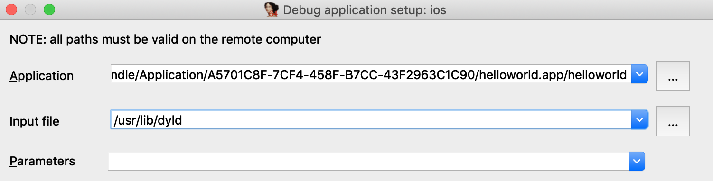
Under Debugger>Debugger options, enable Suspend on debugging start. This will instruct IDA to suspend the process at dyld’s entry point, before it has begun binding symbols. Now launch the process with F9 - immediately the process will be suspended at __dyld_start:
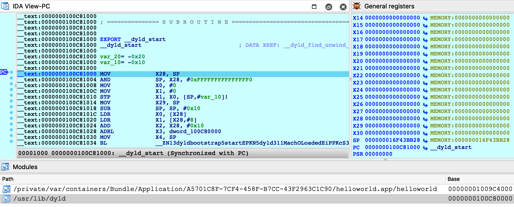
Double-click on the helloworld module to bring up its symbol list and go to the _main function:
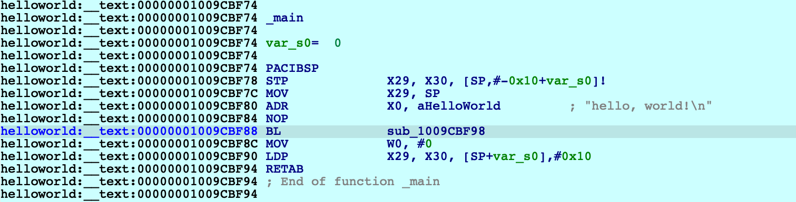
Note that function sub_1009CBF98 is the stub for puts:
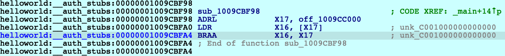
The stub reads a value from off_109CC000, then performs a branch with pointer authentication. We can assume that at some point, dyld will fill off_109CC000 with an authenticated pointer to puts. Let’s use IDA to quickly track down this logic in dyld.
The iOS debugger supports watchpoints. Now would be a good time to use one:
ida_dbg.add_bpt(0x1009CC000, 8, BPT_WRITE)
Resume the process and wait for dyld to trigger our watchpoint:
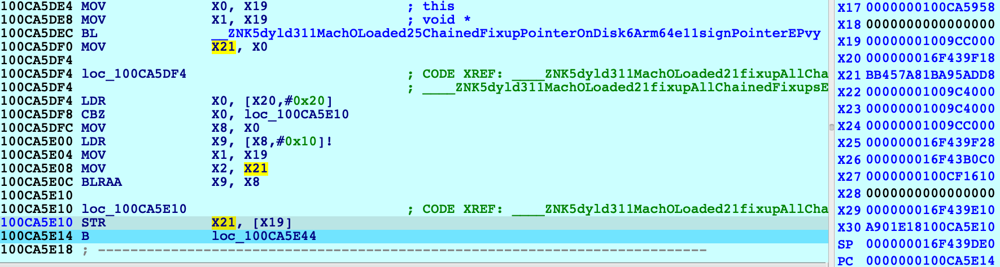
The instruction STR X21 [X19] triggered the watchpoint, and note the value in X21 (BB457A81BA95ADD8) which is the authenticated pointer to puts. Where did this value come from? We can see that X21 was previously set with MOV X21, X0 after a call to this function:
dyld3::MachOLoaded::ChainedFixupPointerOnDisk::Arm64e::signPointer
It seems like we’re on the right track. Also note that IDA was able to extract a nice stack trace despite dyld’s heavy use of PAC instructions to authenticate return addresses on the stack:
Address Module Function
100CA5E14 dyld ____ZNK5dyld311MachOLoaded21fixupAllChainedFixups_block_invoke
100CA5EEC dyld dyld3::MachOLoaded::walkChain
100CA5BF0 dyld dyld3::MachOLoaded::forEachFixupInAllChains
100CA5B50 dyld dyld3::MachOLoaded::fixupAllChainedFixups
100CA2210 dyld ____ZN5dyld36Loader18applyFixupsToImage_block_invoke.68
100CB0218 dyld dyld3::MachOAnalyzer::withChainStarts
100CA2004 dyld ____ZN5dyld36Loader18applyFixupsToImage_block_invoke_3
100CB3314 dyld dyld3::closure::Image::forEachFixup
100CA15EC dyld dyld3::Loader::applyFixupsToImage
100CA0A00 dyld dyld3::Loader::mapAndFixupAllImages
100C88784 dyld dyld::launchWithClosure
100C86BE0 dyld dyld::_main
100C81228 dyld dyldbootstrap::start
100C81034 dyld __dyld_start
This leads us to the following logic in the dyld-733.6 source:
// authenticated bind
newValue = (void*)(bindTargets[fixupLoc->arm64e.bind.ordinal]);
if (newValue != 0)
newValue = (void*)fixupLoc->arm64e.signPointer(fixupLoc, newValue);
Here, fixupLoc (off_109CC00) and newValue (address of puts) are passed as the loc and target arguments for Arm64e::signPointer:
uint64_t discriminator = authBind.diversity;
if ( authBind.addrDiv )
discriminator = __builtin_ptrauth_blend_discriminator(loc, discriminator);
switch ( authBind.key ) {
case 0: // IA
return __builtin_ptrauth_sign_unauthenticated(target, 0, discriminator);
case 1: // IB
return __builtin_ptrauth_sign_unauthenticated(target, 1, discriminator);
case 2: // DA
return __builtin_ptrauth_sign_unauthenticated(target, 2, discriminator);
case 3: // DB
return __builtin_ptrauth_sign_unauthenticated(target, 3, discriminator);
}
Thus, the pointer to puts is signed using its destination address in helloworld:__auth_got as salt for the signing operation. This is quite clever because the salt value is subject to ASLR and therefore cannot be guessed, but at this point the executable has already been loaded into memory – so it won’t change by the time the pointer is verified in the stub.
To see this in action, use F4 to run to the BRAA instruction in the stub and note the values of the operands:
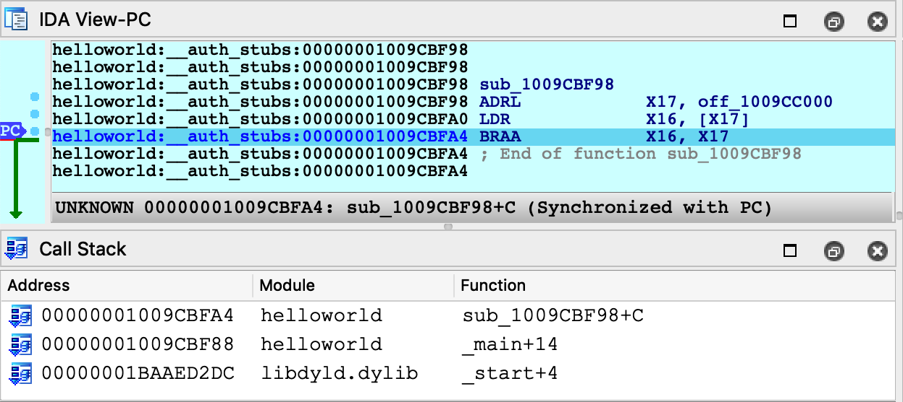
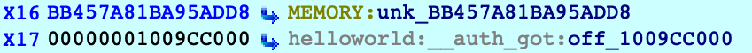
The branch will use the operands to verify that the target address has not been modified after it was originally calculated by dyld. Since we haven’t done anything malicious, one more single step should take us right to puts:
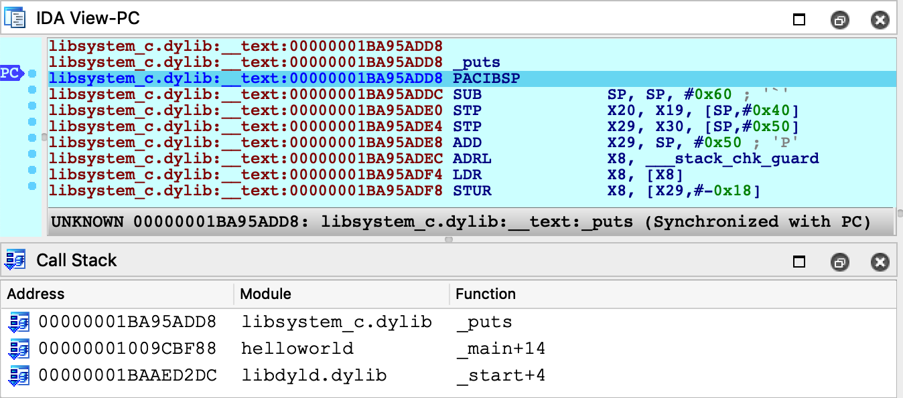
Just for fun, let’s rewind the process back to the start of the stub:
IDC>PC = 0x1009CBF98
Then overwrite the authenticated pointer to puts with a raw pointer to printf:
ida_bytes.put_qword(0x1009CC000, ida_name.get_name_ea(BADADDR, "_printf"))
Now when we step through the stub, the BRAA instruction should detect that the authenticated pointer has been modified, and it will purposefully crash the application by setting PC to an invalid address:
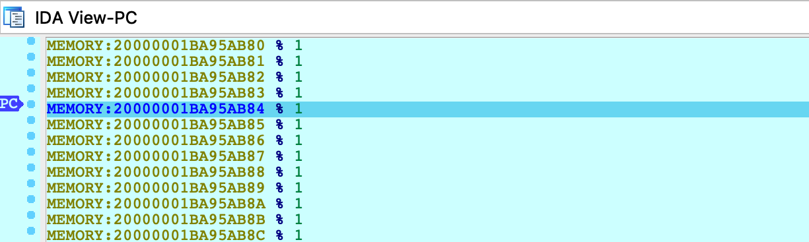
Any attempt to resume execution will inevitably fail:
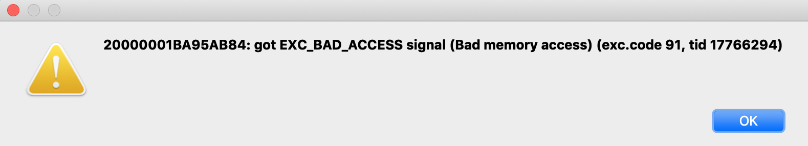
It seems we now have an understanding of secure symbol bindings in dyld. Fascinating!
Debugging the DYLD Shared Cache
This section discusses how to optimally debug system libraries in a dyld_shared_cache.
NOTE: full support for dyld_shared_cache debugging requires IDA 7.5 SP1
Debugging iOS system libraries is a challenge because the code is only available in the dyld cache. IDA allows you to load a library directly from the cache, but this has its own complications. A single module typically requires loading several other modules before the analysis becomes useful. Fortunately IDA is aware of these annoyances and allows you to debug such code with minimal effort.
To start, consider the following sample application that uses the CryptoTokenKit framework:
#import <CryptoTokenKit/CryptoTokenKit.h>
int main(void)
{
TKTokenWatcher *watcher = [[TKTokenWatcher alloc] init];
NSArray *tokens = [watcher tokenIDs];
for ( int i = 0; i < [tokens count]; i++ )
printf("%s\n", [[tokens objectAtIndex:i] UTF8String]);
return 0;
}
Assume this program has been compiled and installed on the device as ctk.app.
Instead of debugging the test application, let’s try debugging the CryptoTokenKit framework itself - focusing specifically on the -[TKTokenWatcher init] method.
Initial Analysis
First we’ll need access to the dyldcache that contains the CryptoTokenKit framework. The best way to obtain the cache is to extract it from the ipsw package for your device/iOS version. This ensures that you are working with the original untouched cache that was installed on your device.
When opening the cache in IDA, choose the load option Apple DYLD cache for arm64e (single module) and select the CryptoTokenKit module:
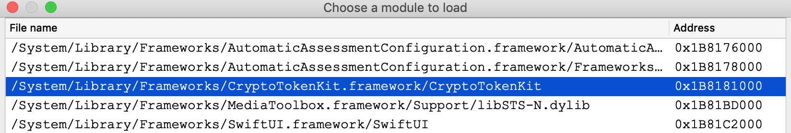
Wait for IDA to finish the initial analysis of CryptoTokenKit. Immediately we might notice that the analysis suffers because of references to unloaded code. Most notably many Objective-C methods are missing a prototype, which is unusual:
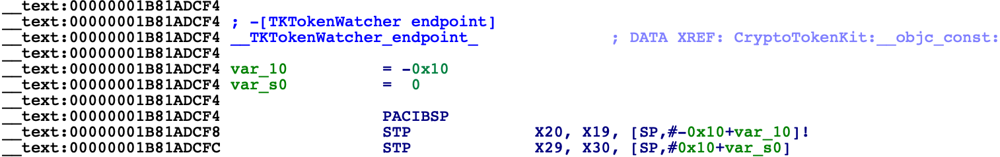
However this is expected. Modern dyld caches store all Objective-C class names and method selectors inside the libobjc module. Objective-C analysis is practically useless without these strings, so we must load the libobjc module to access them. Since a vast majority of modules depend on libobjc in such a way, it is a good idea to automate this in a script.
For a quick fix, save the following idapython code as init.py:
# improve functions with branches to unloaded code
idaapi.cvar.inf.af &= ~AF_ANORET
def dscu_load_module(module):
node = idaapi.netnode()
node.create("$ dscu")
node.supset(2, module)
load_and_run_plugin("dscu", 1)
# load libobjc, then analyze objc types
dscu_load_module("/usr/lib/libobjc.A.dylib")
load_and_run_plugin("objc", 1)
Then reopen the cache with:
$ ida64 -Sinit.py -Oobjc:+l dyld_shared_cache_arm64e
This will tell IDA to load libobjc immediately after the database is created, then perform the Objective-C analysis once all critical info is in the database. This should make the initial analysis acceptable in most cases. In the case of CryptoTokenKit, we see that the Objective-C prototypes are now correct:
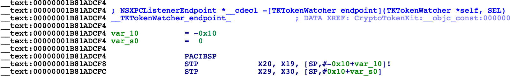
Now let’s go to the -[TKTokenWatcher init] method invoked by the ctk application:
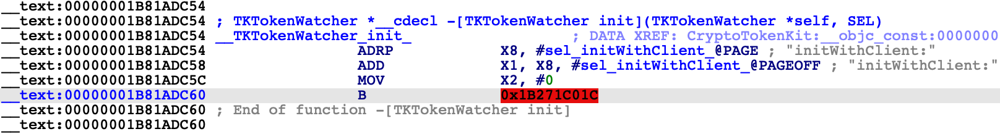
If we right-click on the unmapped address 0x1B271C01C, IDA provides two options in the context menu:
In this case the better option is Load ProVideo:__auth_stubs, which loads only the stubs from the module and properly resolves the names:
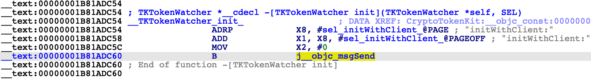
This is a common pattern in the latest arm64e dyldcaches, and it is quite convenient for us. Loading a handful of __auth_stubs sections is enough to resolve most of the calls in CryptoTokenKit, which gives us some nice analysis for -[TKTokenWatcher init] and its helper method:
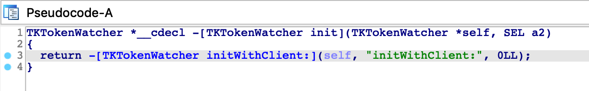
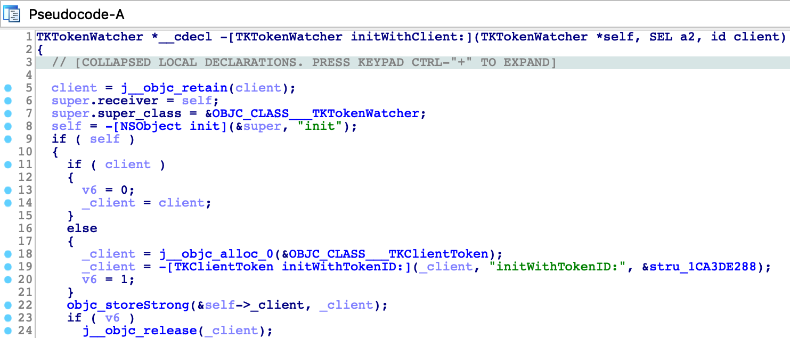
Debugger Configuration
Now that the static analysis is on par with a typical iOS binary, let’s combine it with dynamic analysis. We can debug this database by setting the following options in Debugger>Process options:
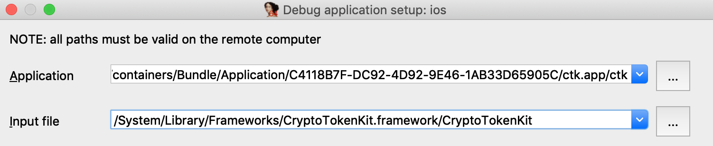
Here we set the Input file field to the full path of the CryptoTokenKit module. This allows IDA to easily detect the dyldcache slide at runtime. When CryptoTokenKit is loaded into the process, IDA will compare its runtime load address to the imagebase in the current idb, then rebase the database accordingly.
By default the imagebase in the idb corresponds to the first module that was loaded:
IDC>msg("%a", get_imagebase())
CryptoTokenKit:HEADER:00000001B8181000
Thus, it is easiest to set Input file to the module corresponding to the default imagebase.
Note however that we could also use this configuration:
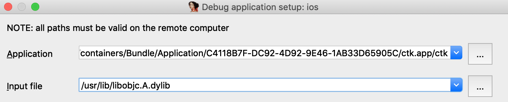
Provided that we update the imagebase in the idb to the base of the libobjc module:
ida_nalt.set_imagebase(ida_segment.get_segm_by_name("libobjc.A:HEADER").start_ea)
This will result in the same dyld slide and should work just as well, because the the imagebase and the Input file field both correspond to the same module. This is something to keep in mind when debugging dyldcache idbs that contain multiple libraries.
Now let’s try launching the debugger. Set a breakpoint at -[TKTokenWatcher initWithClient:], use F9 to launch the process, then wait for our breakpoint to be hit:
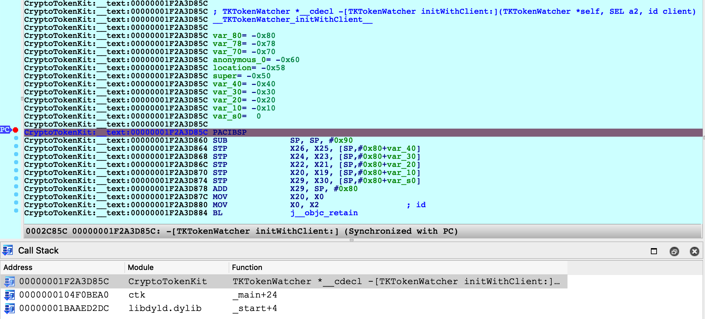
IDA was able to map our database (including CryptoTokenKit, libobjc, and the satellite __auth_stubs sections) into process memory. We can single step, resume, inspect registers, and perform any other operation that is typical of an IDA debugging session.
Further Analysis
Note that after terminating the debugging session you can continue to load new modules from the cache. If a dyld slide has been applied to the database, new modules will be correctly loaded into the rebased address space. This did not work in previous versions of IDA.
For example, after a debugging session we might notice some more unresolved calls:
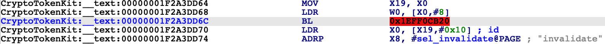
IDA is aware that the address space has shifted, and it will load the new code at the correct address:
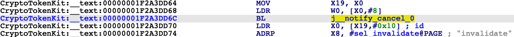
You are free to load new modules and relaunch debugging sessions indefinitely.
Debugging System Applications
The previous examples used custom applications to demonstrate IDA’s debugging capabilities. In this case IDA can utilize the debugserver included in Apple’s iOS developer tools, but there are situations in which this server is not sufficient for our needs.
The debugserver will refuse to debug any application that we didn’t build ourselves. To demonstrate this, try launching IDA with an empty database and use Debugger>Attach>Remote iOS Debugger to attach to one of the system daemons:
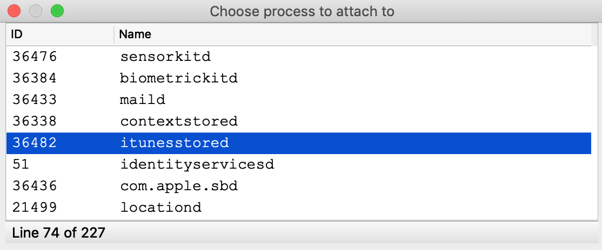
You will likely get this error message:
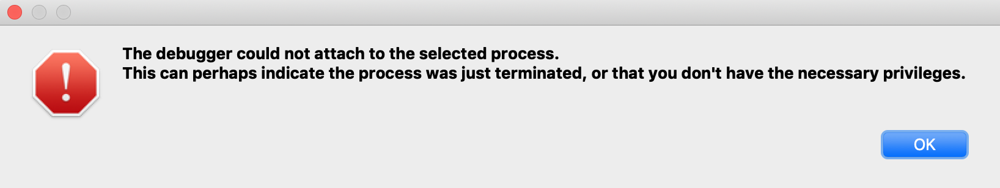
It is possible to install a custom version of the debugserver that can debug system processes, but this requires a jailbroken device. We document the necessary steps and IDA configuration here. The device used in this example is an iPhone 8 with iOS 13.2.2, jailbroken with checkra1n 0.10.1.
Patching the debugserver
First we must obtain a copy of the debugserver binary from the DeveloperDiskImage.dmg:
$ export DEVELOPER=/Applications/Xcode.app/Contents/Developer
$ export DEVTOOLS=$DEVELOPER/Platforms/iPhoneOS.platform/DeviceSupport
$ hdiutil mount $DEVTOOLS/13.2/DeveloperDiskImage.dmg
$ cp /Volumes/DeveloperDiskImage/usr/bin/debugserver .
Now save the following xml as entitlements.plist:
<?xml version="1.0" encoding="UTF-8"?>
<!DOCTYPE plist PUBLIC "-//Apple//DTD PLIST 1.0//EN" "http://www.apple.com/DTDs/ PropertyList-1.0.dtd">
<plist version="1.0">
<dict>
<key>task_for_pid-allow</key> <true/>
<key>get-task-allow</key> <true/>
<key>platform-application</key> <true/>
<key>com.apple.springboard.debugapplications</key> <true/>
<key>run-unsigned-code</key> <true/>
<key>com.apple.system-task-ports</key> <true/>
</dict>
</plist>
Then use ldid to codesign the server:
$ ldid -Sentitlements.plist debugserver
This will grant the debugserver permission to debug any application, including system apps. Now we can copy the server to the device and run it:
$ scp debugserver root@iphone-8:/usr/bin/
$ ssh root@iphone-8
iPhone-8:~ root# /usr/bin/debugserver 192.168.1.7:1234
debugserver-@(#)PROGRAM:LLDB PROJECT:lldb-900.3.98 for arm64.
Listening to port 1234 for a connection from 192.168.1.7...
Note that we specified 192.168.1.7 which is the IP of the host machine used in this example. Be sure to replace this with the IP of your host so that the server will accept incoming connections from IDA.
IDA Configuration
To enable debugging with the patched debugserver, set the following options in dbg_ios.cfg:
// don't launch the debugserver. we did it manually
AUTOLAUNCH = NO
// your device's UUID. this is used when fetching the remote process list
DEVICE_ID = "";
// debugging symbols extracted by Xcode
SYMBOL_PATH = "~/Library/Developer/Xcode/iOS DeviceSupport/13.2.2 (17B102)/Symbols";
We’re now ready to open a binary in IDA and debug it. Copy the itunesstored binary from your device, it is typically found here:
/System/Library/PrivateFrameworks/iTunesStore.framework/Support/itunesstored
After loading the binary use Debugger>Select debugger and choose Remote iOS Debugger, then under Debugger>Process options set the following fields:
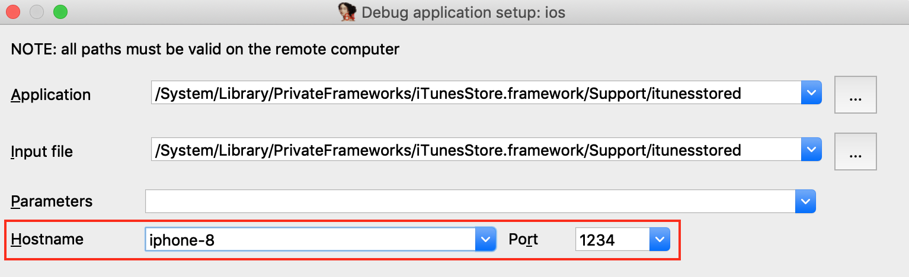
Since we set AUTOLAUNCH = NO, IDA now provides the Hostname and Port fields so we can specify how to connect to our patched debugserver instance.
Now use Debugger>Attach to process and choose itunesstored from the process list. Since we have modified the debugserver it should agree to debug the target process, allowing IDA to create a typically robust debugging environment:
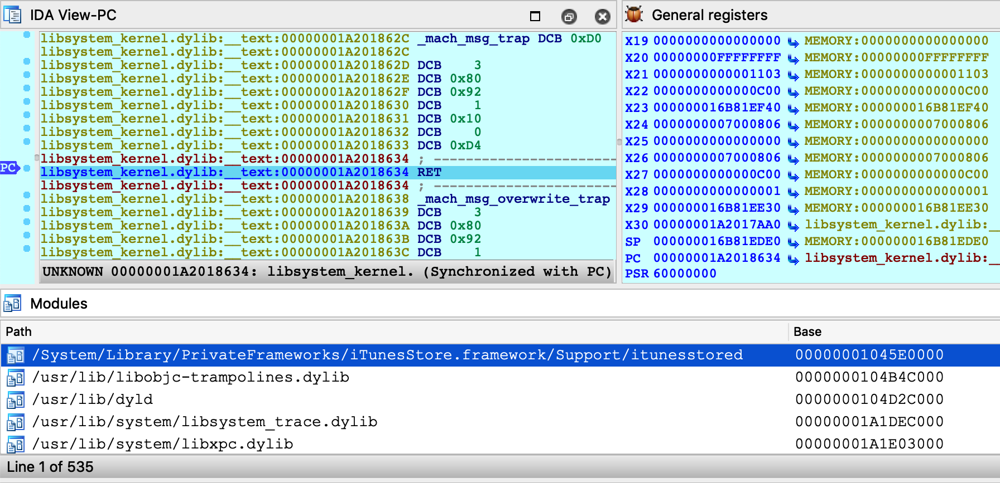
\Note that although we’re not using the debugserver from DeveloperDiskImage.dmg, IDA still depends on other developer tools to query the process list. We discuss how to install the DeveloperDiskImage in the Getting Started section above, but for a quick workaround you can always just specify the PID manually:
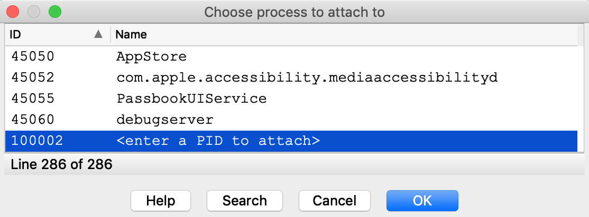
Now that we’ve successfully attached to a system process, let’s do something interesting with it. Consider the method -[PurchaseOperation initWithPurchase:]. This logic seems to be invoked when a transaction is performed in the AppStore. Set a breakpoint at this method, then open the AppStore on your device and try downloading an app (it can be any app, even a free one).
Immediately our breakpoint is hit, and we can start unwinding the logic that brought us here:
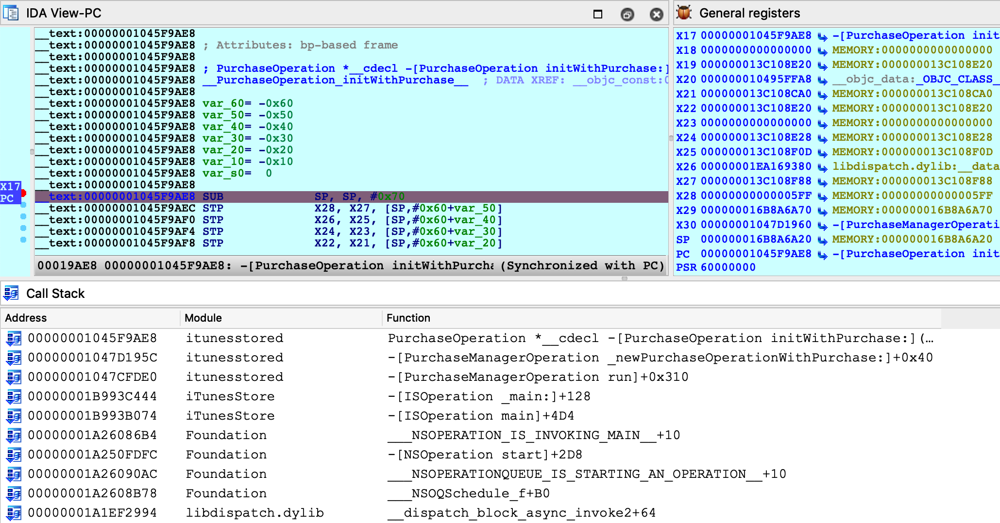
Stepping through this function, we see many Objective-C method call sites:
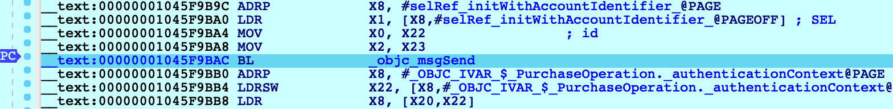
Instead of using F7 to step into the _objc_msgSend function, we can use shortcut Shift-O to take us directly to the Objective-C method that is being invoked:
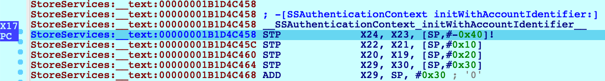
We discuss the Shift-O action in detail in our mac debugger primer, but it is worth demonstrating that this action works just as well in arm64/iOS environments.
It seems that we’re well on our way to reverse-engineering transactions in the AppStore. The remaining work is left as an exercise for the reader :)
Conclusion
Hopefully by now we’ve shown that IDA’s iOS Debugger is quite versatile. It can play by Apple’s rules when debugging on a non-jailbroken device, and it can also be configured to use an enhanced debugserver when a jailbreak is available.
Also keep in mind that all previous examples in this writeup should work equally well with the patched debugserver. We encourage you to go back and try them.
\
Troubleshooting
IDA uses the Remote GDB Protocol to communicate with the iOS debugserver. Thus, the best way to diagnose possible issues is to log the packets transmitted between IDA and the server. You can do this by running IDA with the -z10000 command-line option:
$ ida64 -z10000 -L/tmp/ida.log
Often times these packets contain messages or error codes that provide clues to the issue.
For more enhanced troubleshooting, you can also enable logging on the server side. Go to Debugger>Debugger options>Set specific options and set the Syslog flags field:
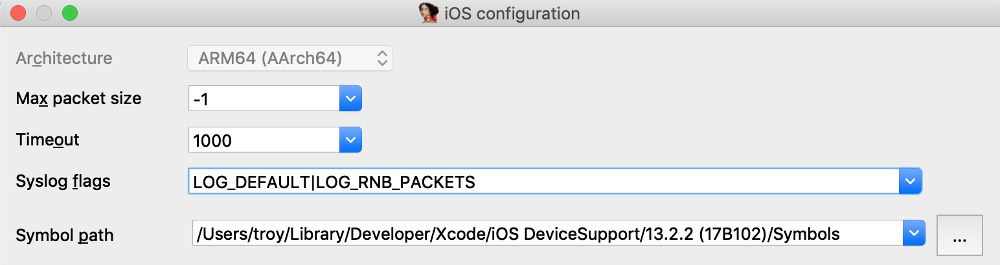
This will instruct the debugserver to log details about the debugging session to the iOS system log (all valid flags are documented under the SYSLOG_FLAGS option in dbg_ios.cfg).
Start collecting the iOS system log with:
$ ios_deploy syslog -f /tmp/sys.log
Then launch the debugger. Now both the client (/tmp/ida.log) and the server (/tmp/sys.log) will log important events in the debugger session, which will often times reveal the issue.`
Notes
This tutorial replaces the old iOS debugging tutorial, which is available here.